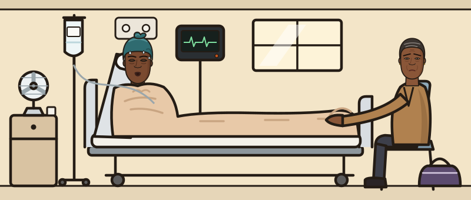

Admission summary
Drug chart
Observations
NEWS2
How this case works
- 1Work her up in stages: history, then examination, then investigations. You can step back to a stage you have opened; the case counts how often you do.
- 2The bedside trolley is a tap. Everything else you type. Every move costs ward time.
- 3Commit a diagnosis once a result is back. Then write her plan as you would in the notes, and answer the questions that follow.
NEWS2

Ask what you need. Each question costs half a minute of ward time.
Focused examination
Bedside tests are on the trolley. Everything else is ordered on ICE — type it the way you would at the terminal. This morning’s 06:00 bloods are on the system.
Order on ICE
You’ve called it. Now write the plan — free text, the way you’d write it in the notes. Nothing is listed; what you write is what gets done.
Diagnosis
Her diagnosis
The ending
You called it wrong.
What actually happened
Management
Eight questions
One at a time, thirty seconds each.
0/160
Your plan against the standard
Against the learning objectives
Your journey
What happened next
Results that came back later
Score breakdown
Teaching pearls